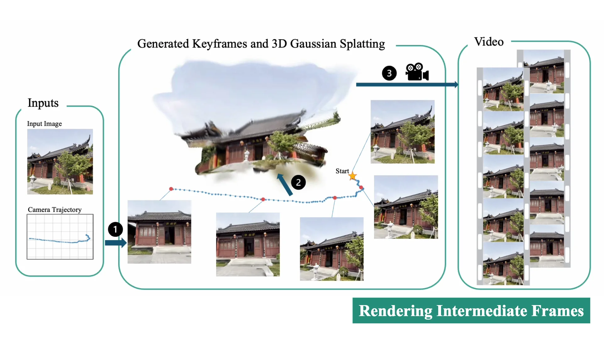
Efficient Camera-Controlled Video Generation of Static Scenes via Sparse Diffusion and 3D Rendering
Jieying Chen, Jeffrey Hu, Joan Lasenby, Ayush Tewari
arXiv, 2026
Hi, I'm Jeffrey! I'm a second year PhD student at the University of Cambridge supervised by Professor Ayush Tewari. Previously, I was a research engineer at the GraphDeco group in INRIA with Professor George Drettakis. I was also an active contributor to gsplat.
Before this, I worked on autonomous vehicles and building the perception system for autonomous trains at Parallel Systems in Los Angeles. I received my undergraduate and Master's degrees in Electrical Engineering and Computer Science at MIT with Professor Antonio Torralba.
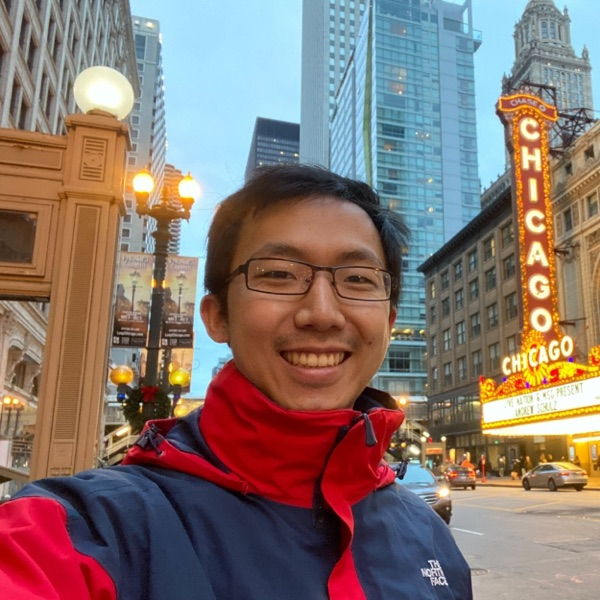
I am deeply interested in 3D computer vision, computer graphics, and differentiable rendering. I want to capture and build generative models for the real world.

Jieying Chen, Jeffrey Hu, Joan Lasenby, Ayush Tewari
arXiv, 2026
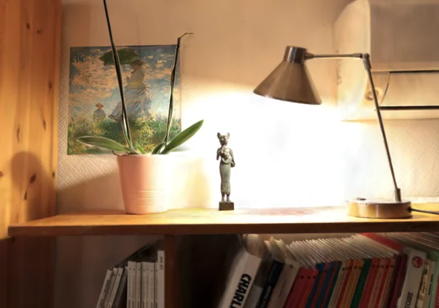
Alexandre Lanvin, Jeffrey Hu, Simon Lucas, Adrien Bousseau, George
Drettakis
I3D, 2026
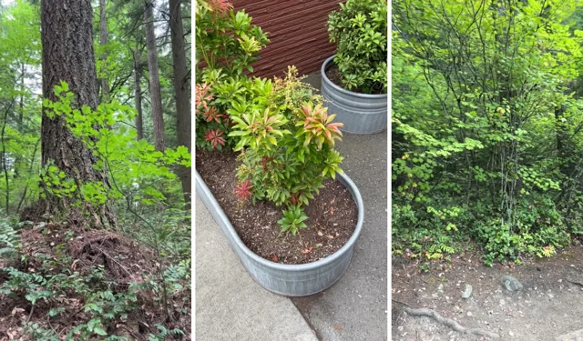
Petros Tzathas, Jeffrey Hu, Andréas Meuleman, Guillaume Cordonnier,
George Drettakis
Eurographics, 2026
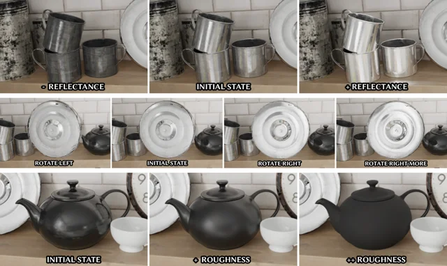
Yohan Poirier-Ginter, Jeffrey Hu, Jean-François Lalonde, George
Drettakis
SIGGRAPH Asia, 2025
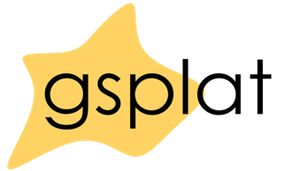
Vickie Ye, Ruilong Li, Justin Kerr, Matias Turkulainen, Brent Yi, Zhuoyang Pan, Otto
Seiskari, Jianbo Ye, Jeffrey Hu, Matthew Tancik, Angjoo Kanazawa
JMLR, 2025
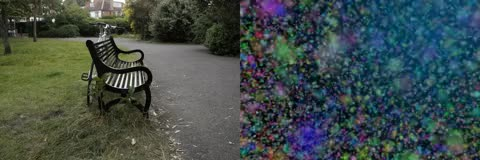
Improved densification strategy for 3DGS.
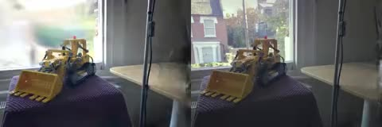
Use bilateral grids to model changes in camera exposure and other ISP effects for gaussian splats.
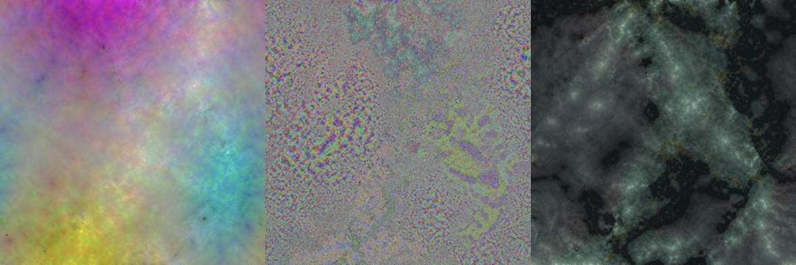
Use image compression to compress gaussian splats.
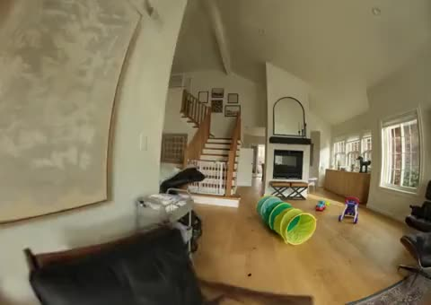
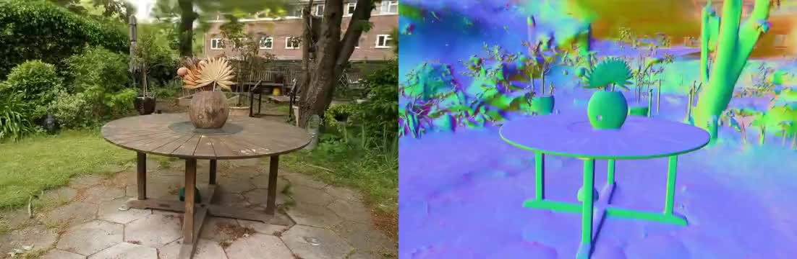
Interpret the z-axis of 3D Gaussians as their normal vector to achieve a similar effect to 2DGS.
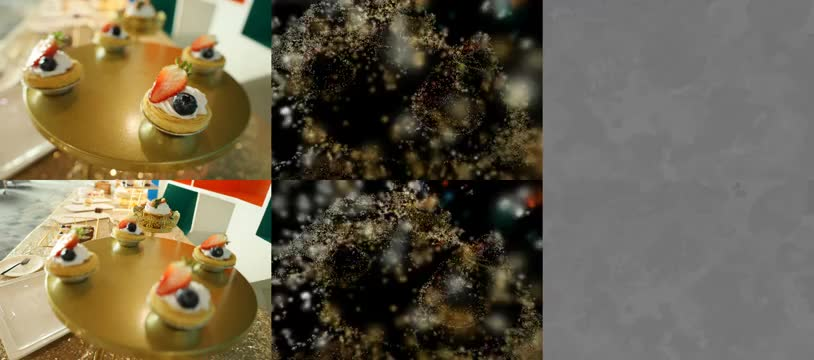